Table of Contents
4. Functions
4.1. Introduction to Functions
4.1.1. Functions and Their Notation
4.1.2. Graphical Representations of Functions
4.1.3. The Vertical Line Test
4.2. Domain and Range
4.2.1. Introduction to Domain and Range
4.2.2. Visualizing Domain and Range
4.2.3. Domains of Rational and Radical Functions
4.3. Properties of Functions
4.3.1. Increasing, Decreasing, and Constant Functions
4.3.2. Relative Minima and Maxima
4.3.3. Piecewise Functions
4.3.4. One-to-One Functions
4.3.5. Symmetry of Functions
4.3.6. Even and Odd Functions
4.4. Transformations
4.4.1. Transformations of Functions
4.4.2. Translations
4.4.3. Reflections
4.4.4. Stretching and Shrinking
4. Functions
4.1. Introduction to Functions
4.1.1. Functions and Their Notation
A function maps a set of inputs onto a set of permissible outputs. Each input corresponds with one and only one output
Learning Objective
Connect the notation of functions to the notation of equations and understand the criteria for a valid function
Key Points
- Functions are a relation between a set of inputs and a set of outputs with the property that each input maps to exactly one output.
- Typically functions are named with a single letter such as f.
- Functions can be thought of as a machine in a box that is open on two ends. You put something into one end of the box, it somehow gets changed inside of the box, and then the result pops out the other end.
- All functions are relations, but not all relations are functions.
Key Terms
- function
- A function is a relation in which each element of the input is associated with exactly one element of the output.
- relation
- A relation is a connection between numbers in one set and numbers in another.
- output
- The output is the result or answer from a function.
Functions
In mathematics, a function is a relation between a set of inputs and a set of permissible outputs. Functions have the property that each input is related to exactly one output. For example, in the function $f(x)=x^2$ any input for $x$ will give one output only.
Functions are typically named with a single letter, like $f$ . $f(x)$ is read "$f$ of $x$ ", and represents the output of the function $f$ corresponding to an input $x$ . The input variable(s) are sometimes referred to as the argument(s) of the function. Consider the following example:
Let $f(x)=x^2$
Let $x=-3$ , then:
In the example above, the argument is $x=-3$ and the output is $9$ . We write the function as:$f(-3)=9$ .
In the case of a function with just one input variable, the input and output of the function can be expressed as an ordered pair. The order is such that the first element is the argument and the second is the output. In the example above, $f(x)=x^2$ , we have the ordered pair $(-3, 9)$ . If both the input and output are real numbers then the ordered pair can be viewed as the Cartesian coordinates of a point on the graph of the function.
Another commonly used notation for a function is $f:X\rightarrow Y$ , which reads as saying that $f$ is a function that maps values from the set $X$ onto values of the set $Y$ .
Functions as a Machine
Functions are often described as a machine in a box that is open on two ends. You put something into one end of the box, it gets changed inside of the box, and then the result pops out the other end. The function is the machine inside the box and it's defined by what it does to whatever you put into it.
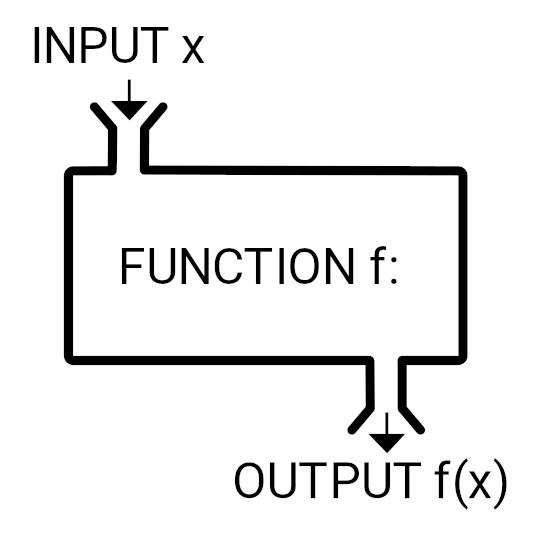{kind=link}
A function $f$ takes an input $x$ and returns an output $f(x)$ . One metaphor describes the function as a "machine", that for each input returns a corresponding output.
Let's say the machine has a blade that slices whatever you put in into two and sends one half of that object out the other end. If you put in a banana you would get back half a banana. If you put in an apple you would get back half an apple.
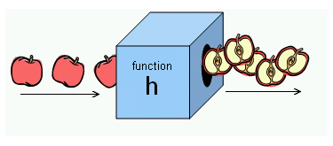{kind=link}
This shows a function that takes a fruit as input and releases half the fruit as output.
Let's define the function to take what you put into it and cut it in half. That is, the function divides the input by two. If you put in $2$ you would get back $1$ . If you put in $57$ you would get back $28.5$ . The function machine allows us to alter expressions. In this example, the function would be written as:
$\displaystyle f(x)=\frac{1}{2}x$ .
Functions As a Relation
Functions can also be thought of as a subset of relations. A relation is a connection between values in one set and values in another. In other words, each number you put in is associated with each number you get out. In a function every input number is associated with exactly one output number In a relation an input number may be associated with multiple or no output numbers. This is an important fact about functions that cannot be stressed enough: every possible input to the function must have one and only one output. All functions are relations, but not all relations are functions.
4.1.2. Graphical Representations of Functions
Graphs provide a visual representation of functions, showing the relationship between the input values and output values.
Learning Objective
Describe the relationship between graphs of equations and graphs of functions
Key Points
- Functions have an independent variable and a dependent variable. Typically $x$ is the independent variable and $y$ the dependent variable.
- As you choose any valid value for the independent variable, the dependent variable is determined by the function.
- To graph a function, choose some values for the independent variable, $x$ , plug them into the function to get a set of ordered pairs $(x,f(x))$ , and plot these on the graph. Then connect the points to best match how the points are arranged on the graph. Make sure you have enough points.
Key Terms
- independent variable
- An independent variable in an equation or function is one whose value is not dependent on any other in the equation or function.
- dependent variable
- The dependant variable in an equation or function is that whose value depends on one or more independant variables in the equation or function.
- graph
- A diagram displaying data; in particular one showing the relationship between two or more quantities, measurements, or numbers.
Independent and Dependent Variables in Function Notation
Functions have an independent variable and a dependent variable. When we look at a function such as $f(x)=\frac{1}{2}x$ , we call the variable that we are changing, in this case $x$ , the independent variable. We assign the value of the function to a variable, in this case $y$ , that we call the dependent variable. Function notation, $f(x)$ is read as "$f$ of $x$ " which means "the value of the function at $x$ ." Since the output, or dependent variable is $y$ , for function notation often times $f(x)$ is thought of as $y$ . The ordered pairs normally stated in linear equations as $(x,y)$ , in function notation are now written as $(x,f(x))$ .
We say that $x$ is independent because we can pick any value for which the function is defined, in this case the set of real numbers $\mathbb{R}$ , as inputs into the function. We say the result is assigned to the dependent variable since it depends on what value we placed into the function.
Graphing Functions
Example 1: Let's start with a simple linear function:
$\displaystyle f(x)=5-\frac{5}{2}x$ .
Start by graphing as if $f(x)$ is a linear equation:
$\displaystyle y=5-\frac{5}{2}x$
We choose a few values for the independent variable, $x$ . Let's choose a negative value, zero, and a positive value:
$\displaystyle x=-2, 0, 2 $ .
Next, substitute these values into the function for $x$ , and solve for $f(x)$ (which means the same as the dependent variable $y$ ): we get the ordered pairs:
$\displaystyle (-2,10), (0,5), (2,0)$
This function is that of a line, since the highest exponent in the function is a $1$ , so simply connect the three points. Extend them in either direction past the points to infinity, and we have our graph.
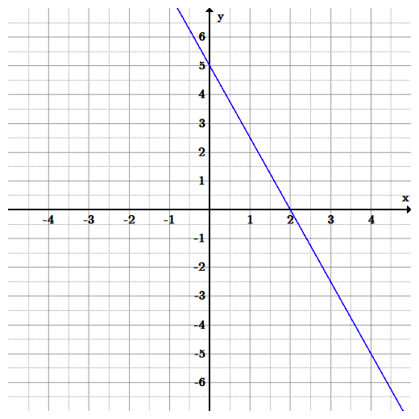{kind=link}
This is the graph of the function $f(x)=5-\frac{5}{2}x$ . The function is linear, since the highest degree in the function is a $1$ . Only two points are required to graph a linear function.
Example 2: Graph the function:
$\displaystyle f(x)=x^{3}-9x$ .
Start by choosing values for the independent variable, $x$ . This function is more complicated than that of a line so we'll need to choose more points. Let us choose:
$\displaystyle x=\{0, \pm1, \pm2, \pm3, \pm4\}$ .
Next, plug these values into the function, $f(x)=x^{3}-9x$ , to get a set of ordered pairs, in this case we get the set of ordered pairs:
$\displaystyle \{(-4, -28),(-3,0)(-2,10),(-1,8),(0,0),(1,-8),(2,-10),(3,0),(4,28)\}$ .
Next place these points on the graph, and connect them as best as possible with a curve. The graph for this function is below.
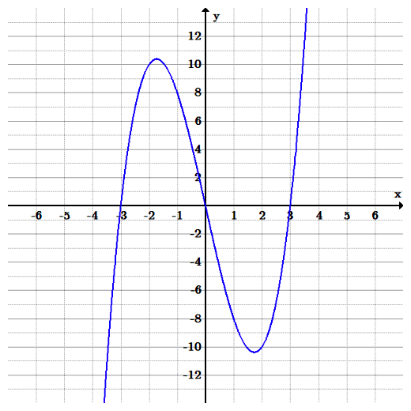{kind=link}
Graph of the cubic function $f(x)=x^{3}-9x$ . The degree of the function is 3, therefore it is a cubic function.
4.1.3. The Vertical Line Test
The vertical line test is used to determine whether a curve on an $xy$ -plane is a function
Learning Objective
Explain why the vertical line test shows, graphically, whether or not a curve is a function
Key Points
- A function can only have one output, $y$ , for each unique input, $x$ . If any $x$ -value in a curve is associated with more than one $y$ -value, then the curve does not represent a function.
- If a vertical line intersects a curve on an $xy$ -plane more than once, then for one value of x the curve has more than one value of y, and the curve does not represent a function.
Key Terms
- function
- A relation in which each element of the input is associated with exactly one element of the output.
- vertical line test
- A visual test that determines whether a curve is a function or not by examining the number of
$y$ -values associated with each$x$ -value that lies on the curve.
In mathematics, the vertical line test is a visual way to determine if a curve is a graph of a function, or not. Recall that a function can only have one output, $y$ , for each unique input, $x$ . If any $x$ -value in a curve is associated with more than one $y$ -value, then the curve does not represent a function.
If a vertical line intersects a curve on an $xy$ -plane more than once, then for one value of x the curve has more than one value of y, and the curve does not represent a function. If all vertical lines intersect a curve at most once then the curve represents a function.
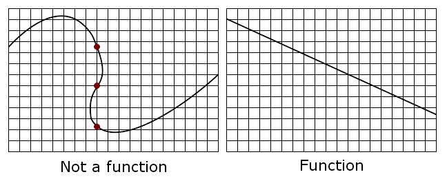{kind=link}
Note that in the top graph, a single vertical line drawn where the red dots are plotted would intersect the curve 3 times. Thus, it fails the vertical line test and does not represent a function. Any vertical line in the bottom graph passes through only once and hence passes the vertical line test, and thus represents a function.
To use the vertical line test, take a ruler or other straight edge and draw a line parallel to the $y$ -axis for any chosen value of $x$ . If the vertical line you drew intersects the graph more than once for any value of $x$ then the graph is not the graph of a function. If, alternatively, a vertical line intersects the graph no more than once, no matter where the vertical line is placed, then the graph is the graph of a function. For example, a curve which is any straight line other than a vertical line will be the graph of a function.
Example
Refer to the three graphs below, $(a)$ , $(b)$ , and $(c)$ . Apply the vertical line test to determine which graphs represent functions.
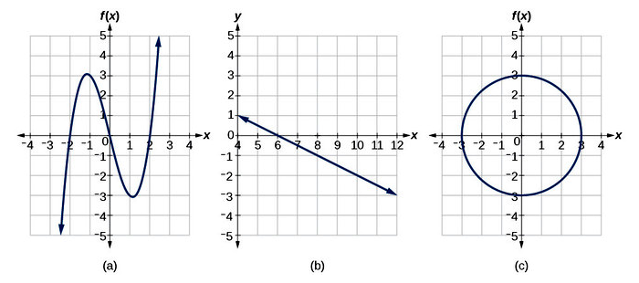{kind=link}
Which graphs represent functions?
If any vertical line intersects a graph more than once, the relation represented by the graph is not a function. Notice that any vertical line would pass through only one point of the two graphs shown in graphs $(a)$ and $(b)$ . From this we can conclude that these two graphs represent functions. The third graph, $(c)$ , does not represent a function because, at most $x$ -values, a vertical line would intersect the graph at more than one point. This is shown in the diagram below.
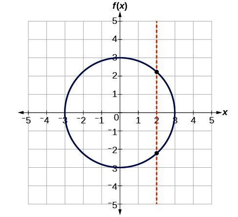{kind=link}
The vertical line test demonstrates that a circle is not a function.
4.2. Domain and Range
4.2.1. Introduction to Domain and Range
The domain of a function is the set of all possible input values that produce some output value range
Learning Objective
Define the domain and range of a function
Key Points
- Given a function $f$ , the set $x$ values (inputs) is the domain of $f$ , and the set $y$ values (outputs) is the range of $f$ .
- The domain of a function $f$ is all of the values for which the function is defined. For instance, $\frac{1}{x}$ is not defined when $x=0$ . Also, $\sqrt{x}$ is not defined when $x$ is negative.
- To find the domain of a function $f$ , you must find the values for which $f$ is not defined. So the domain for $\sqrt{x}$ is $ x \geq 0$ .
Key Terms
- function
- A relationship between two quantities, called the input and the output; for each input, there is exactly one output.
- domain
- The set of all points over which a function is defined.
- range
- The set of values the function takes on as output.
What Is the Domain and Range of a Function?
The domain of a function is the set of input values, $x$ , for which a function is defined. The domain is shown in the left oval in the picture below. The function provides an output value, $f(x)$ , for each member of the domain. The set of values the function outputs is termed the range of the function, and those values are shown in the right hand oval in the picture below. A function is the relation that takes the inputs of the domain and output the values in the range. The rule for a function is that for each input there is exactly one output.
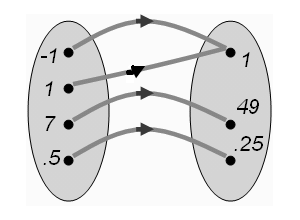{kind=link}
The oval on the left is the domain of the function $f$ , and the oval on the right is the range. The green arrows show how each member of the domain is mapped to a particular value of the range.
As you can see in the illustration, each value of the domain has a green arrow to exactly one value of the range. Therefore this mapping is a function.
We can also tell by the set of ordered pairs given in this mapping that it is a function because none of the $x$ -values repeat: $(-1,1),(1,1),(7,49),(0.5,0.25)$ ; since each input maps to exactly one output. (Note that although the output value of $1$ repeats, only the input values can not repeat)
We can also tell this mapping, and set of ordered pairs is a function based on the graph of the ordered pairs because the points do not make a vertical line. If an $x$ value were to repeat there would be two points making a graph of a vertical line, which would not be a function. Let's look at this mapping and list of ordered pairs graphed on a Cartesian Plane.
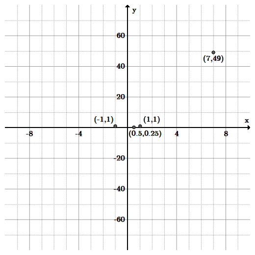{kind=link}
This mapping or set of ordered pairs is a function because the points do not make a vertical line. This is called the vertical line test of a function. It shows that for every input there is exactly one output value.
In addition, the domain of $f(x)=x^{2}$ is the set of all real numbers, $\mathbb{R}$ , as every real number you put into $f$ will give an output, namely $ x^2$ .
It is important to note that not all functions have the set of real numbers as their domain. For instance, the function $f(x) = \frac{1}{x}$ is not defined for $x=0$ , because you cannot divide a number by $0$ . In this case, the domain of $f$ is the set of all real numbers except $0$ . That is, $x\neq0$ . So the domain of this function is $\mathbb{R}-\{0\}$ .
What about the function $f(x)=\sqrt{x}$ ? In this case, the square root of a negative number is not defined, and so the domain is the set of all real numbers where $x\geq0$ .
Finding the Domain and Range: Given a Function
In order to find the domain of a function, if it isn't stated to begin with, we need to look at the function definition to determine what values are not allowed. For instance, we know that you cannot take the square root of a negative number, and you cannot divide by $0$ . With this knowledge in hand, let's find the domain of a function.
Example 1: Find the domain of:
$\displaystyle f(x)=\frac{1}{\sqrt{x-1}-2}+x$
First, we know we cannot divide by $0$ , so any value of $x$ that causes a division by $0$ is not allowed in the domain. In this example, this occurs when:
$\displaystyle \sqrt{x-1}-2=0$
Solving for $x$ , this happens when $x=5$ , so we know that $x\neq5$ .
We also know we can't take the square root of a negative number. This means that:
$\displaystyle x-1>0 $
After solving for $x$ , we see that $x>1$ . So this function's domain is the set of all real numbers such that $x>1$ and $x\neq5$ .
Therefore, to find what values are not in the domain, you must find the values where the function is not defined.
4.2.2. Visualizing Domain and Range
All values in the domain are mapped onto values in the range that are visualized as graphs of functions
Learning Objective
Use the graph of a function to determine its domain and range
Key Points
- Values in the domain map onto values in the range.
- The horizontal and vertical line test can help determine the type of relation between the domain and range.
Key Terms
- range
- The set of values (points) which a function can obtain.
- domain
- The set of all points over which a function is defined.
- function
- Any mathematical formula that produces one and only one result for each input.
Review of Domain, Range, and Functions
As stated in a previous section, the domain of a function is the set of 'input' values $(x)$ for which the function is defined. The domain is part of the definition of a function. For example, the domain of the function $f(x) = \sqrt{x} $ is $x\geq0$ .
The range of a function is the set of results, solutions, or 'output' values $(y)$ to the equation for a given input. By definition, a function only has one result for each domain. For instance, the function $f(x)=x^{2}$ has a range of $f(x)\geq0$ , because the square of a number always yields a positive result.
In taking both domain and range into account, a function is any mathematical formula that produces one and only one result for each input. Hence, every given domain value has one and only one range value as a result, but not necessarily vice versa. In other words, two different values of $x$ can have the same $y$ -value, but each $y$ -value must be joined with a distinct $x$ -value. This makes sense since results can repeat (the $y$ -values), but inputs cannot (the $x$ -values).
Determining Domain and Range
The domain and range can be visualized using a graph, such as the graph for $f(x)=x^{2}$ , shown below as a red U-shaped curve. The blue N-shaped (inverted) curve is the graph of $f(x)=-\frac{1}{12}x^3$ .
Example 1: Determine the domain and range of each graph pictured below:
Both graphs include all real numbers $x$ as input values, since both graphs continue to the left (negative values) and to the right (positive values) for $x$ (inputs). The curves continue to infinity in both directions; therefore, we say the domain for both graphs is the set of all real numbers, notated as: $\mathbb{R}$ .
If we now look at the possible outputs or $y$ -values, $f(x)$ , (looking up and down the $y$ -axis, notice that the red graph does NOT include $y$ -values that are negative, whereas the blue graph does include both positive and negative values. Therefore, the range for the graph $f(x)=x^{2}$ , is $\mathbb{R}$ except $y< 0$ , or simply stated: $y \geq 0$ . The range for the graph $f(x)=-\frac{1}{12}x^3$ , is $\mathbb{R}$ .
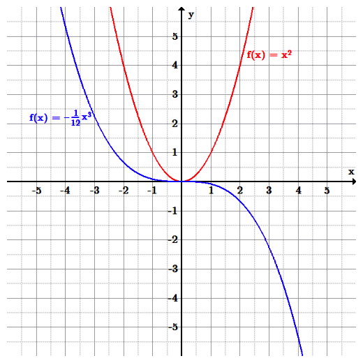{kind=link}
The graph of $f(x)=x^2$ (red) has the same domain (input values) as the graph of $f(x)=-\frac{1}{12}x^3$ (blue) since all real numbers can be input values. However, the range of the red graph is restricted to only $f(x)\geq0$ , or $y$ -values above or equal to $0$ . The range of the blue graph is all real numbers, $\mathbb{R}$ .
Example 2: Determine the domain and range of each graph pictured below:
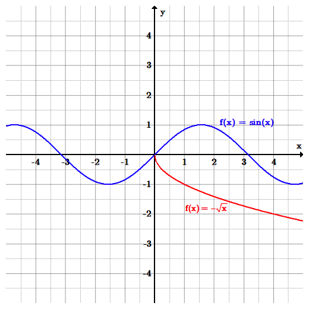{kind=link}
The blue graph is the trigonometric function $f(x)=sin (x)$ with a domain of $\mathbb{R}$ and a restricted range of $-1 \leq y \leq 1$ (output values only exist between $-1$ to $1$ . The red graph is the function $f(x)=-\sqrt{x}$ with a restricted domain of $x \geq 0$ , and also a restricted range of $y\leq0$ .
4.2.3. Domains of Rational and Radical Functions
Rational and radical expressions have restrictions on their domains which can be found algebraically or graphically.
Learning Objective
Calculate the domain of a rational or radical function by finding the values for which it is undefined
Key Points
- A rational expression is the quotient of two polynomials. It can be expressed as $\displaystyle \frac{P(x)}{Q(x)}$ .
- A rational expression's domain is set such that the denominator cannot equal zero. Therefore, given $\displaystyle \frac{P(x)}{Q(x)}$ , $Q(x)\neq 0$ .
- To determine the domain of a rational expression, set the denominator equal to zero, then solve for $x$ . All values of $x$ except for those that satisfy $Q(x)=0$ are the domain of the expression.
- A radical expression, is expressed as $\sqrt x$ and can have other roots other than a square root.
- A radical function is expressed as $f(x)=\sqrt x$ , (usually just referred to as the "square root function") is a function that maps the set of non-negative real numbers onto itself.
- To determine the domain of a radical expression, set the radicand equal to zero, then solve for $x$ . All values of $x$ except for those that satisfy $\sqrt x=0$ are the domain of the expression.
Key Terms
- radicand
- The number or expression underneath the radical sign.
- rational expression
- An expression that can be written as the quotient of two polynomials.
Finding Domains of Rational Functions
A rational expression is one which can be written as the ratio of two polynomial functions. Despite being called a rational expression, neither the coefficients of the polynomials nor the values taken by the function are necessarily rational numbers. In the case of one variable, $x$ , an expression is called rational if and only if it can be written in the form:
where $P(x)$ and $Q(x)$ are polynomial functions in $x $ and $Q(x)$ is not the zero polynomial $(Q(x) \neq 0)$ .
The domain of a rational expression of is the set of all points for which the denominator is not zero. If the denominator of the equation becomes equal to zero, the expression is undefined at that point.
Example 1: What is the domain of the rational function:
$\displaystyle f(x)= \frac { x^3-2x }{ 2(x^2-5) }$
To find the domain of a rational function, set the denominator equal to zero and solve. All values of $x$ except for those that satisfy $2(x^2-5)=0$ are the domain of the expression.
To solve, divide both sides by $2$ , add $5$ to both sides, and then take the square root of both sides to yield:
$\displaystyle x=\pm \sqrt { 5 }$ .
Therefore the domain is the set of all real numbers except the square root of five or negative square root of five.
Notice the graph of the function below. At the values of $x=\pm \sqrt { 5 }$ (which is approximately $\pm 2.2$ ), the graph does not exist.
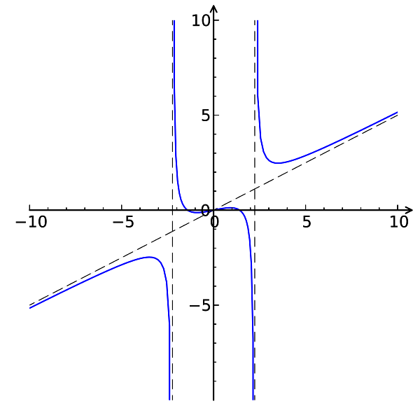{kind=link}
The graph of the function: $f(x)=\displaystyle \frac { x^3-2x }{ 2(x^2-5) }$ , where the domain is restricted at $x=\pm \sqrt { 5 }$ since the function does not exist at those points. The function has three parts; for x-values less than the negative square root of 5, it has an oblique asymptote and a vertical asymptote at the negative square root of 5, descending to negative infinity at the vertical asymptote. It is entirely in the third quadrant. For x-values between the negative and positive square root of five, the function looks similar to a cubic polynomial, but with vertical asymptotes at the boundaries given. It descends from positive infinity to negative infinity. For x-values greater than the square root of 5, the function again has a vertical asymptote at the square root of 5 and an oblique asymptote. It descends from positive infinity at the vertical asymptote then curves to follow the oblique asymptote to positive infinity. It is only in the first quadrant.
Example 2: What is the domain of the rational function:
$\displaystyle f(x)= \frac{\left(x^2-2\right)}{x}$
Algebraically, the domain is the set of all real numbers except zero, since the denominator can not equal zero. One way to determine this is to look at it graphically. We can see that the graph is discontinuous at $x=0$ , indicating that the domain is all numbers other than $x=0$ . This makes sense, because at $x=0$ we would have to divide by zero, which is undefined. The lines of the graph get closer and closer to the value $x=0$ , but never touch.
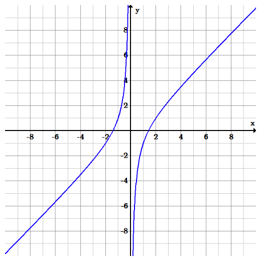{kind=link}
A graph of the equation: $f(x)= \frac{\left(x^2-2\right)}{x}$ . To determine the domain of this function, we can graph it and look for where the function doesn't exist, in this case when $x=0$ The graph ascends from negative infinity to positive infinity for negative x-values. For positive x-values, it ascends from negative infinity to positive infinity again. It therefore has a vertical asymptote where the graph is discontinuous, at x=0.
Finding Domains of Radical Functions
The principal square root function $f(x)=\sqrt x$ (usually just referred to as the "square root function") is a function that maps the set of non-negative real numbers onto itself.
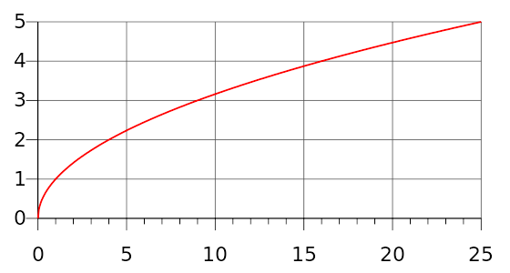{kind=link}
The function $f(x)=\sqrt x$ consists of a restricted domain of $x\geq 0$ , or non-negative real numbers, since we can not take the square root of a negative number. Half of a sideways parabola, with its vertex at the origin and existing for only positive x and y values (only in the first quadrant).
Note that half of the parabola is missing since functions cannot have more than one value at a point, and the square root function is taken to yield a positive value (though $(-x)^2$ gives the same value as $x^2$ so the square root of a number $y$ such that $y=x^2$ would be $\sqrt y = \pm x$ ). It is important to remember when graphing the roots that negative values of $x$ will not produce real numbers. This will be explained further in the section on imaginary numbers.
To determine the domain of a radical function algebraically, find the values of $x$ for which the radicand is nonnegative (set it equal to $\geq 0$ ) and then solve for $x$ . The radicand is the number or expression underneath the radical sign. All values of $x$ except for those that satisfy $\sqrt x \geq 0$ are the domain of the function.
Example 3: What is the domain of the radical function:
$\displaystyle f(x) = \sqrt {x-3} +4$
Set the radicand greater than or equal to zero and solve for $x$ to find the restrictions on the domain:
$\displaystyle {x-3} \geq 0$
Therefore $x \geq 3$ . So, all real number greater than or equal to $3$ is the domain of the function.
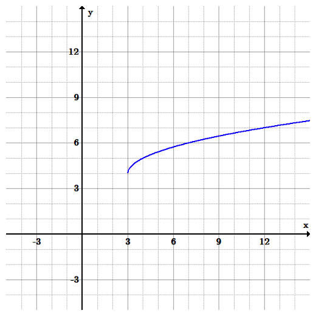{kind=link}
The graph of the equation: $f(x) = \sqrt {x-3} +4$ . The function has the domain of all real numbers greater than or equal to $3$ , as shown in the graph above. Half of a sideways parabola with its vertex at (3, 4). It exists for x-values greater than 3 and for y-values greater than 4.
4.3. Properties of Functions
4.3.1. Increasing, Decreasing, and Constant Functions
Functions can either be constant, increasing as $x$ increases, or decreasing as $x $ increases.
Learning Objective
Apply the definitions of increasing and decreasing functions to determine whether a function is increasing, decreasing, or neither in a given interval
Key Points
- A constant function is a function whose values do not vary, regardless of the input into the function.
- An increasing function is one where for every $x_{1}$ and $x_{2}$ that satisfies $x_{2}$ > $x_{1}$ , then $f(x_{2}) \geq f(x_{1})$ . If it is strictly greater than, then it is strictly increasing.
- A decreasing function is one where for every $x_{1}$ and $x_{2}$ that satisfies $x_{2}$ > $x_{1}$ , then $f(x_{2}) \leq f(x_{1})$ . If it is strictly less than, then it is strictly decreasing.
Key Terms
- increasing function
- Any function of a real variable whose value increases (or is constant) as the variable increases.
- decreasing function
- Any function of a real variable whose value decreases (or is constant) as the variable increases.
- constant function
- A function whose value is the same for all the elements of its domain.
Graphical Behavior of Functions
As part of exploring how functions change, we can identify intervals over which the function is changing in specific ways. We say that a function is increasing on an interval if the function values increase as the input values increase within that interval. Similarly, a function is decreasing on an interval if the function values decrease as the input values increase over that interval.
- An increasing function is one where for every $x_1$ and $x_2$ that satisfies $x_2> x_1$ , then $f(x_{2}) \geq f(x_{1})$ . If it is strictly greater than $(f(x_2)>f(x_1))$ , then it is strictly increasing.
- A decreasing function is one where for every $x_1$ and $x_2$ that satisfies $x_2> x_1$ , then $f(x_{2}) \leq f(x_{1})$ . If it is strictly less than $(f(x_2) < f(x_1))$ , then it is strictly decreasing.
In terms of a linear function $f(x)=mx+b$ , if $m$ is positive, the function is increasing, if $m$ is negative, it is decreasing, and if $m$ is zero, the function is a constant function.
The average rate of change of an increasing function is positive, and the average rate of change of a decreasing function is negative. The figure below shows examples of increasing and decreasing intervals on a function.
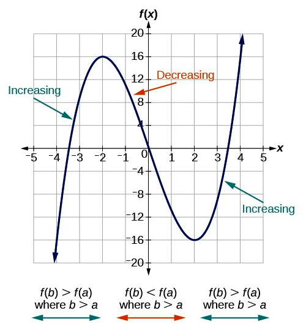{kind=link}
The function $f(x)=x^3-12x$ is increasing on the $x$ -axis from negative infinity to $-2$ and also from $2$ to positive infinity. The interval notation is written as: $(-, -2)(2, )$ . The function is decreasing on on the interval: $ (-2, 2)$ A cubic polynomial that crosses the x-axis at x-values between -4 and 3, at 0, and between 3 and 4. From x= negative infinity to x=-2, the function is increasing; f(b) is greater than f(a) where b is greater than a. From x=-2 to x=2, the function is decreasing; f(b) is less than f(a) where b is greater than a. From x=2 to infinity, the function is again increasing.
Constant Functions
In mathematics, a constant function is a function whose values do not vary, regardless of the input into the function. A function is a constant function if $f(x)=c$ for all values of $x$ and some constant $c$ . The graph of the constant function $y(x)=c$ is a horizontal line in the plane that passes through the point $(0,c).$
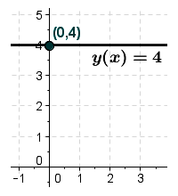{kind=link}
The graph of $f(x)=4 $ illustrates a constant function. A horizontal line passing through (0, 4)
Identifying Function Behavior
Example 1: Identify the intervals where the function is increasing, decreasing, or constant.
Look at the graph from left to right on the $x$ -axis; the first part of the curve is decreasing from infinity to the $x$ -value of $-1$ and then the curve increases. The curve increases on the interval from $-1$ to $1$ and then it decreases again to infinity.
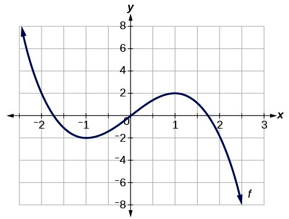{kind=link}
For the function pictured above, the curve is decreasing across the intervals: $(-\infty,-1)\cup (1,\infty )$ and increasing on the interval $ (-1,1)$ A cubic polynomial increasing and decreasing on the intervals listed..
4.3.2. Relative Minima and Maxima
Relative minima and maxima are points of the smallest and greatest values in their neighborhoods respectively.
Learning Objective
Determine the local and global maxima and minima of a given function
Key Points
- Minima and maxima are collectively known as extrema.
- A function has a global (or absolute) maximum point at $x$ * if $f(x*) f(x)$ for all $x$ .
- A function has a global (or absolute) minimum point at $x$ * if $f(x*) f(x)$ for all $x$ .
- A function $f$ has a relative (local) maximum at $x=b$ if there exists an interval $(a,c)$ with $a<b<c$ such that, for any $x$ in the interval $(a,c)$ , $f(x)f(b)$ .
- A function $f$ has a relative (local) minimum at $x=b$ if there exists an interval $(a,c)$ with $a<b<c$ such that, for any $x$ in the interval $(a,c)$ , $f(x)f(b)$ .
- Functions don't necessarily have extrema in them. For example any line, $f(x) = mx+b$ where $m$ and $b$ are constants, does not have any extrema, be they local or global.
Key Terms
- extremum
- A point, or value, which is a maximum or a minimum.
- minimum
- The smallest value of a set.
- maximum
- The greatest value of a set.
Minima and maxima are used heavily in optimization problems and artificial intelligence where, given a number of constraints on resources, we want the best use of our resources. For instance, we may want to maximize our profits given the items we can make and our available resources. In artificial intelligence we may want to discover what the least costly plan of action to take is for a robot (ie. the shortest path). Ideally you'd want to find the global minima for the plans. However, because there is not unlimited time to identify the right plan, artificial intelligence often simply finds the local minima.
Definitions of Minimums and Maximums: Relative versus Global
In mathematics, the maximum and minimum of a function (known collectively as extrema) are the largest and smallest value that a function takes at a point either within a given neighborhood (local or relative extremum) or within the function domain in its entirety (global or absolute extremum).

This graph has examples of all four possibilities: relative (local) maximum and minimum, and global maximum and minimum.
While some functions are increasing (or decreasing) over their entire domain, many others are not. A value of the input where a function changes from increasing to decreasing (as we go from left to right, that is, as the input variable increases) is called a relative maximum. If a function has more than one, we say it has local maxima. Similarly, a value of the input where a function changes from decreasing to increasing as the input variable increases is called a relative minimum. The plural form is local minima.
A function is also neither increasing nor decreasing at extrema. Note that we have to speak of local extrema, because any given local extremum as defined here is not necessarily the highest maximum or lowest minimum in the function’s entire domain.
- A function $f$ has a relative (local) maximum at $x=b$ if there exists an interval $(a,c)$ with $a<b<c$ such that, for any $x$ in the interval $(a,c)$ , $f(x)f(b)$ .
- Likewise, $f$ has a relative (local) minimum at $x=b$ if there exists an interval $(a,c)$ with $a<b<c$ such that, for any $x$ in the interval $(a,c)$ , $f(x)f(b)$ .
{kind=link}
For the function pictured, the local maximum is at the $y$ -value of 16, and it occurs when $x=-2$ . The local minimum is at the $y$ -value of−16 and it occurs when $x=2$ .
A function has a global (or absolute) maximum point at $x$ * if $f(x) f(x)$ for all $x$ . Similarly, a function has a global (or absolute) minimum point at $x$ if $f(x) f(x) $ for all $x$ . Global extrema are also relative extrema.
Functions may not have any extrema in them, such as the line $y=x$ . This line increases towards infinity and decreases towards negative infinity, and has no relative extrema.
Distingushing Relative and Global Maximum and Minimum
Example 1: Find all maxima and minima in the graph below:
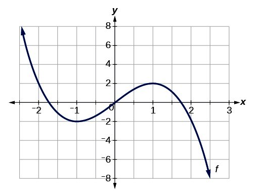{kind=link}
This curve shows a relative minimum at $(-1,-2)$ and relative maximum at $(1,2)$ .
The graph attains a local maximum at $(1,2)$ because it is the highest point in an open interval around $x=1$ . The local maximum is the y-coordinate at $x=1$ which is $2$ .
The graph attains a local minimum at $(-1,-2)$ because it is the lowest point in an open interval around $x=-1$ . The local minimum is the y-coordinate $x=-1$ which is $-2$ .
Example 2: Find all global maxima and minima in the graph below:
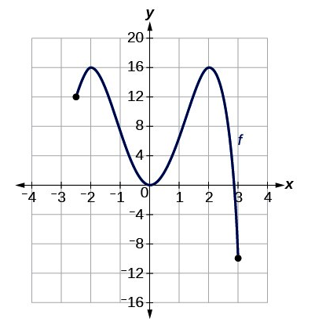{kind=link}
For the function pictured above, the absolute maximum occurs twice at $y=16$ and the absolute minimum is at $(3,-10)$ .
The graph attains an absolute maximum in two locations, $x=-2$ and $x=2$ , because at these locations, the graph attains its highest point on the domain of the function. The absolute maximum is the y-coordinate which is $16$ .
The graph attains an absolute minimum at $x=3$ , because it is the lowest point on the domain of the function’s graph. The absolute minimum is the y-coordinate which is $-10$ .
4.3.3. Piecewise Functions
A piecewise function is defined by multiple subfunctions that are each applied to separate intervals of the input
Learning Objective
Practice graphing piecewise functions and determine their domains and ranges
Key Points
- Piecewise functions are defined using the common functional notation, where the body of the function is an array of functions and associated subdomains.
- The absolute value, $\left | x \right |$ is a very common piecewise function. For a real number, its value is $-x$ when $x<0$ and its value is $x$ when $x\geq0$ .
- Piecewise functions may have horizontal or vertical gaps (or both) in their functions. A horizontal gap means that the function is not defined for those inputs.
- An open circle at the end of an interval means that the end point is not included in the interval, i.e. strictly less than or strictly greater than. A closed circle means the end point is included.
Key Terms
- subdomain
- A domain that is part of a larger domain.
- absolute value
- For a real number, its numerical value without regard to its sign; formally,
$-1$ times the number if the number is negative, and the number unmodified if it is zero or positive. - piecewise function
- A function in which more than one formula is used to define the output over different pieces of the domain.
In mathematics, a piecewise function is a function in which more than one formula is used to define the output over different pieces of the domain. Piecewise functions are defined using the common functional notation, where the body of the function is an array of functions and associated intervals. We use piecewise functions to describe situations in which a rule or relationship changes as the input value crosses certain “boundaries.”
Graphing Piecewise Functions
Example 1: Consider the piecewise definition of the absolute value function:
For all $x$ -values less than zero, the first function $(-x)$ is used, which negates the sign of the input value, making the output values positive. Allowing $y=f(x)$ , where $f(x)=|x|$ , some ordered pair examples of $(x,|x|)$ are:
For all values of $x$ greater than or equal to zero, the second function $(x)$ is used, making the output values equal to the input values. Some ordered pair examples are:
After finding and plotting some ordered pairs for all parts ("pieces") of the function the result is the V-shaped curve of the absolute value function below.
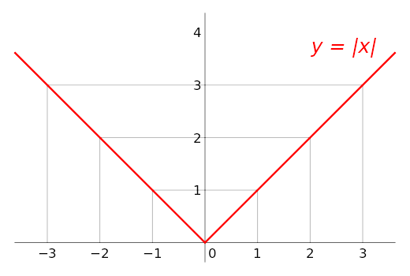{kind=link}
The piecewise function, $\left | x \right |= \left\{\begin{matrix} -x, & if\ x<0\\ x, & if\ x\geq0 \end{matrix}\right.$ , is the graph of the absolute value function. Each part of the function is graphed based upon the specific domain chosen. A v-shaped graph with its vertex at the origin.
Example 2: Graph the function and determine its domain and range:
Start by choosing values for $x$ for the first piece of the function, such as:
Substitute those values into the first part of the piecewise function $f(x)=x^2$ :
Those points satisfy the first part of the function and create the following ordered pairs:
$\displaystyle (-2,4)\\ (-1,1)\\ (0,0)\\ (1,1)$
For the middle part (piece), $f(x)=3$ (a constant function) for the domain $1<x\leq 2$ , a few ordered pairs are:
For the last part (piece), $f(x)=x$ for the domain $x>2$ , a few ordered pairs are:
Now graph all the ordered pairs:
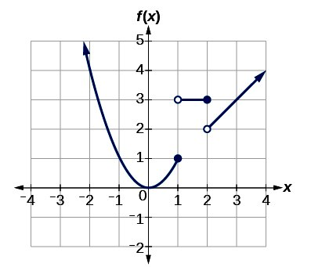{kind=link}
The piecewise function $f(x)= \left\{\begin{matrix} x^2, & if\ x \leq 1\\ 3, & if\ 1<x\leq 2\\ x, & if\ x>2\\ \end{matrix}\right.$ has three parts (pieces). Depending on the value of the domain, each piece is different. A parabola with vertex at the origin for x-values less than 1. A straight horizontal line at a height of 3 from x=1 to x=2. A line with a slope of 1 from x=2.
Notice the open and closed circles in the graph. This has to do with the specific domains for each part of the function. An open circle at the end of an interval means that the end point is not included in the interval, i.e. strictly less than or strictly greater than. A closed circle means the end point is included (equal to).
The domain of the function starts at negative infinity and continues through each piece, without any gaps, to positive infinity. Since there is an closed AND open dot at $x=1$ the function is piecewise continuous there. When $x=2$ , the function is also piecewise continuous. Therefore the domain of this function is the set of all real numbers, $\mathbb{R}$ .
The range begins at the lowest $y$ -value, $y=0$ and is continuous through positive infinity. Even though there looks like a gap from $y=1$ to $y=2$ , the piece of the function $f(x)=x^2$ includes those values. Therefore the range of the piecewise function is also the set of all real numbers greater than or equal to $0$ , or all non-negative values: $y \geq 0$ .
4.3.4. One-to-One Functions
A one-to-one function, also called an injective function, never maps distinct elements of its domain to the same element of its codomain.
Learning Objective
Use the properties of one-to-one functions to determine if a given function is one-to-one
Key Points
- A one-to-one function has a unique output for each unique input.
- Domain restriction can allow a function to become one-to-one, such as in the case of $f(x)=x^2$ for $x\geq 0$ .
- To check if a function is a one-to-one perform the horizontal line test. If any horizontal line intersects the graph in more than one point, the function is not one-to-one.
- If every element of a function's range corresponds to exactly one element of its domain, then the function is said to be one-to-one.
Key Term
- injective function
- A function that preserves distinctness: it never maps distinct elements of its domain to the same element of its codomain.
Properties of a One-To-One Function
A one-to-one function, also called an injective function, never maps distinct elements of its domain to the same element of its co-domain. In other words, every element of the function's range corresponds to exactly one element of its domain. Occasionally, an injective function from $X$ to $Y$ is denoted $f: X \mapsto Y$ , using an arrow with a barbed tail.
An easy way to check if a function is a one-to-one is by graphing it and then performing the horizontal line test. If any horizontal line intersects the graph at more than one point, the function is not one-to-one. To see this, note that the points of intersection have the same y-value, because they lie on the line, but different x values, which by definition means the function cannot be one-to-one.
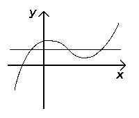{kind=link}
Because the horizontal line crosses the graph of the function more than once, it fails the horizontal line test and cannot be one-to-one. A cubic polynomial with one peak and then one trough. A horizontal line crosses through four points of the function if it is at a y-value less than the peak and greater than the trough.
Determining If a Function is One-To-One
Example 1: Is the function $f(x)={x}^{2}$ (with no domain restrictions) one-to-one?
One way to check if the function is one-to-one is to graph the function and perform the horizontal line test. The graph below shows that it forms a parabola and fails the horizontal line test.
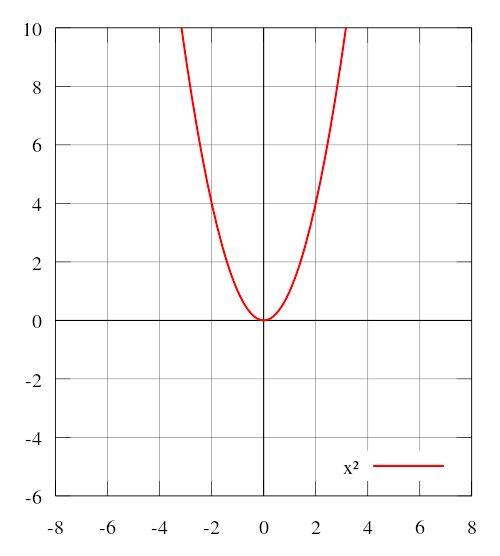{kind=link}
The graph of the function $f(x)=x^2$ fails the horizontal line test and is therefore not a one-to-one function. If a horizontal line can go through two or more points on the function's graph then the function is not one-to-one. A u-shaped curve with vertex at the origin. Any horizontal line above the x-axis would cross two points on the function
Another way to determine if the function is one-to-one is to make a table of values and check to see if every element of the range corresponds to exactly one element of the domain. A list of ordered pairs for the function are:
The ordered pairs $(-2,4)$ and $(2,4)$ do not pass the definition of one-to-one because the element $4$ of the range corresponds to to $-2$ and $2$ . Each unique input must have a unique output so the function cannot be one-to-one. Notice also, that these two ordered pairs form a horizontal line; which also means that the function is not one-to-one as stated earlier.
Example 2: Is the function $f(x)=\left | x \right |$ one-to-one?
This is an absolute value function, which is graphed below. Notice it fails the horizontal line test. Because each unique input does not have a unique output, this function cannot be one-to-one.
{kind=link}
The graph of the function,$f(x)=\left | x \right |$ , fails the horizontal line test and is therefore not a one-to-one function. The absolute value function is a V-shaped function. Any horizontal line above the x-axis would cross through 2 points on the function.
4.3.5. Symmetry of Functions
Two objects have symmetry if one object can be obtained from the other by a transformation.
Learning Objective
Determine whether or not a given relation shows some form of symmetry
Key Points
- A function has symmetry if it can be transformed in some way without changing the function.
- A function can be symmetric about a point if it can be rotated a fixed amount around that point without changing it.
- A function can be symmetric about a line if it can be reflected over that line without changing it.
Key Term
- symmetry
- A property in mathematics where an object can undergo a transformation while preserving its properties.
Symmetry
In mathematics, an object such as a shape or a function has symmetry if it can be transformed in some way that preserves the properties of the mathematical object. In geometry, a geometric shape or object is symmetric if it can be divided into two or more identical pieces that are arranged in an organized fashion.s means that an object is symmetric if there is a transformation that moves individual pieces of the object but doesn't change the overall shape.
For functions, a function exhibits symmetry if each point of a function can be changed according to a mathematical rule without changing the overall function. Determining symmetry can involve graphing the function or evaluating the function algebraically.
Symmetric Function Types
Functions and relations can be symmetric about a point, a line, or an axis. They can also have symmetry after a reflection.
To determine if a relation has symmetry, graph the relation or function and see if the original curve is a reflection of itself over a point, line, or axis. The image below shows examples of reflecting a function over the $x$ -axis (vertical reflection) and over the $y$ -axis (horizontal reflection).
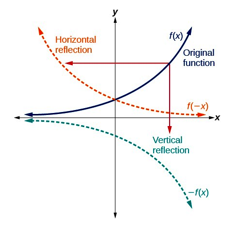
{kind=link}
A function can be reflected over the $x$ or $y$ axis. If the function looks the same after the reflection, the function is symmetric over that axis. The original function f(x) has the x-axis as a horizontal asymptote and increases to positive infinity in the first quadrant. It is always positive and increasing in quadrants 1 and 2. When reflected over the y-axis, the function becomes f(-x), and still has the x-axis as a horizontal asymptote, but decreases from positive infinity towards the x-axis. It is still always positive. When the original function is reflected over the x-axis, it becomes -f(x), keeps the x-axis as a horizontal asymptote, but decreases away from it, decreasing to negative infinity in the fourth quadrant. It is always negative in quadrants 3 and 4.
In the next graph below, quadratic functions have symmetry over a line called the axis of symmetry. The axis splits the U-shaped curve into two parts of the curve which are reflected over the axis of symmetry.
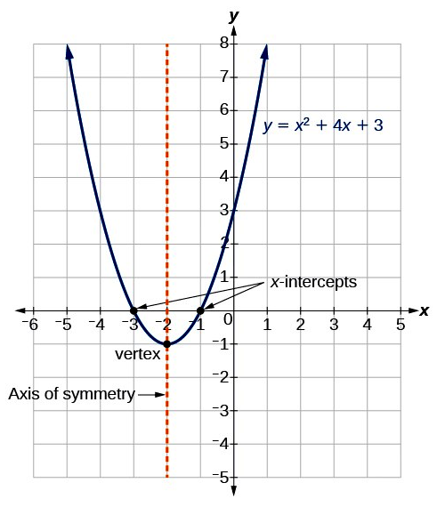{kind=link}
The function $y=x^2+4x+3$ shows an axis of symmetry about the line $x=-2$ . The curve is split into $2$ equivalent halves. Notice that the $x$ -intercepts are reflected points over the axis of symmetry and are equidistant from the axis. The parabola's axis of symmetry is a vertical line at x=-2. The x-intercepts are symmetric about this axis, at x=-3 and -1.
Determining Symmetry
Example: Does the function below show symmetry?
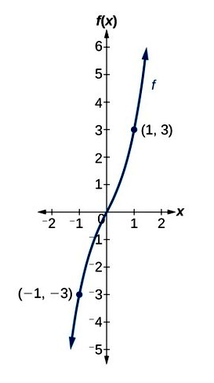{kind=link}
The graph above has symmetry since the points labeled are reflected over the origin. An increasing cubic function through the origin, with labeled points (-1, -3) and (1, 3)
The graph has symmetry over the origin or point $(0,0)$ . The points given, $(1,3)$ and $(-1,-3)$ are reflected across the origin.
4.3.6. Even and Odd Functions
Functions that have an additive inverse can be classified as odd or even depending on their symmetry properties.
Learning Objective
Determine whether a function is even, odd, or neither
Key Points
- The parity of a function does not necessarily reveal whether the function is odd or even.
- Even functions are algebraically defined as functions in which the following relationship holds for all values of: $f(x)=f(-x)$ .
- An even function is symmetric about the $y$ -axis: for every point $(x,y)$ on the graph, the corresponding point $(-x,y)$ or vice versa is also on the graph.
- Odd functions are algebraically defined as functions in which the following relationship holds true for all values of: $-f(x)=f(-x)$ .
- An odd function is symmetric with respect to the origin: for every point $(x,y)$ on the graph, the corresponding point $(-x,-y)$ or vice versa is also on the graph. In other words, rotating the graph $180$ degrees about the point of origin results in the same, unchanged graph.
Key Terms
- parity
- A set with the property of having all of its elements belonging to one of two disjoint subsets, especially a set of integers split in subsets of even and odd elements.
- additive inverse
- The opposite with respect of addition.
Even and Odd Definitions
Functions can be classified as "odd" or "even" based on their composition. These labels correlate with symmetry properties of the function.
The terms "odd" and "even" can only be applied to a limited set of functions. For a function to be classified as one or the other, it must have an additive inverse. Therefore, it must have a number that, when added to it, equals $0$ .
Oftentimes, the parity of a function will reveal whether it is odd or even. For example, the function $f(x)=x^2$ is even because it has an exponent, $2$ , that is an even integer. This, however, does not apply in every instance. For example, $f(x)=\left | x^3 \right |$ has an exponent that is of an odd integer, $3$ , but is also an even function. How can we check if a function is odd or even? Let's look at their characteristics.
Even Functions
Even functions are algebraically defined as functions in which the following relationship holds for all values of $x$ :
To check if a function is even, any $x$ -value chosen must yield the same output value when substituted into the function as $-x$ .
Example 1: Is the function $f(x)=x^4+2x$ even?
Remember the degree of the function, in this case a $4$ which is even, may not always dictate if the function is in fact even.
First, perform an algebraic check: Substitute a value for $x$ and $-x$ into the function and check that the same output is found. Let $x=2$ : will $f(2)=f(-2)?$
$\displaystyle \begin{align} f(2)&=(2)^4+2(2)\\ &=16+4\\ &=20 \end{align}$
Therefore $f(2)\neq f(-2)$ and the function is not even.
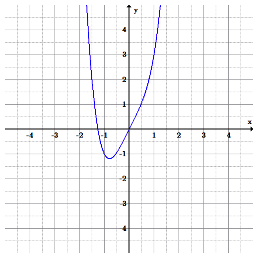{kind=link}
The function $f(x)=x^4+2x$ pictured above is not even because the graph is not symmetric about the $y$ -axis. For example the point $(-1,-1)$ does not reflect onto the point $(1,-1)$ .
We can confirm this graphically: functions that satisfy the requirements of being even are symmetric about the $y$ -axis. Therefore, for every point $(x,y)$ on the graph, the corresponding point $(-x,y)$ or vice versa, is also on the graph.
Odd Functions
Odd functions are algebraically defined as functions in which the following relationship holds true for all values of $x$ :
This relationship can also be expressed as:
To check if a function is odd, the negation of the function (be sure to negate all terms of the function) must yield the same output as substituting the value $-x$ .
Example 2: Is the function $f(x)=x^3-9x$ odd?
Algebraic check: Does $-f(x)=f(-x)$ ?
Therefore $-f(x)=f(-x)$ and the function is odd.
Graphical check: Functions that satisfy the requirements of being odd are symmetric with respect to the origin. In other words, rotating the graph $180$ degrees about the point of origin results in the same, unchanged graph. In addition, for every point $(x,y)$ on the graph, the corresponding point $(-x,-y)$ is also on the graph.
{kind=link}
The function, $f(x)=x^3-9x$ is odd since the graph is symmetric about the origin. One can also check that any point is symmetric about the origin: for example, does $(-1,8)$ yield $(1,-8)$ ? Yes, those two points are symmetric about the origin.
4.4. Transformations
4.4.1. Transformations of Functions
Transformations alter a function while maintaining the original characteristics of that function.
Learning Objective
Determine whether a given transformation is an example of translation, scaling, rotation, or reflection
Key Points
- Transformations are ways that a function can be adjusted to create new functions.
- Transformations often preserve the original shape of the function.
- Common types of transformations include rotations, translations, reflections, and scaling (also known as stretching/shrinking).
Key Terms
- translation
- Shift of an entire function in a specific direction.
- Scaling
- Changes the size and/or the shape of the function.
- rotation
- Spins the function around the origin.
- reflection
- Mirror image of a function.
A transformation takes a basic function and changes it slightly with predetermined methods. This change will cause the graph of the function to move, shift, or stretch, depending on the type of transformation. The four main types of transformations are translations, reflections, rotations, and scaling.
Translations
A translation moves every point by a fixed distance in the same direction. The movement is caused by the addition or subtraction of a constant from a function. As an example, let $f(x) = x^3$ . One possible translation of $f(x)$ would be $x^3 + 2$ . This would then be read as, "the translation of $f(x)$ by two in the positive y direction".
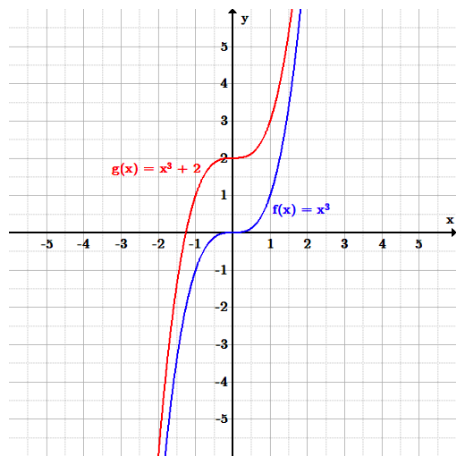{kind=link}
The function $f(x)=x^3$ is translated by two in the positive $y$ direction (up).
Reflections
A reflection of a function causes the graph to appear as a mirror image of the original function. This can be achieved by switching the sign of the input going into the function. Let the function in question be $f(x) = x^5$ . The mirror image of this function across the $y$ -axis would then be $f(-x) = -x^5$ . Therefore, we can say that $f(-x)$ is a reflection of $f(x)$ across the $y$ -axis.
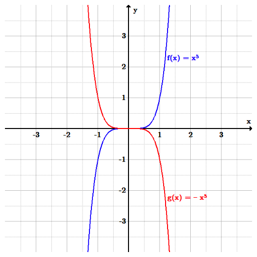{kind=link}
The function $f(x)=x^5$ is reflected over the $y$ -axis.
Rotations
A rotation is a transformation that is performed by "spinning" the object around a fixed point known as the center of rotation. Although the concept is simple, it has the most advanced mathematical process of the transformations discussed. There are two formulas that are used:
$x_1 = x_0cos\theta - y_0sin\theta \\ y_1 = x_0sin\theta + y_0cos\theta$
Where $x_1$ and $y_1$ are the new expressions for the rotated function, $x_0$ and $y_0$ are the original expressions from the function being transformed, and $\theta$ is the angle at which the function is to be rotated. As an example, let $y=x^2$ . If we rotate this function by 90 degrees, the new function reads:
$[xsin(\frac{\pi}{2}) + ycos(\frac{\pi}{2})] = [xcos(\frac{\pi}{2}) - ysin(\frac{\pi}{2})]^2$
Scaling
Scaling is a transformation that changes the size and/or the shape of the graph of the function. Note that until now, none of the transformations we discussed could change the size and shape of a function - they only moved the graphical output from one set of points to another set of points. As an example, let $f(x) = x^3$ . Following from this, $2f(x) = 2x^3$ . The graph has now physically gotten "taller", with every point on the graph of the original function being multiplied by two.
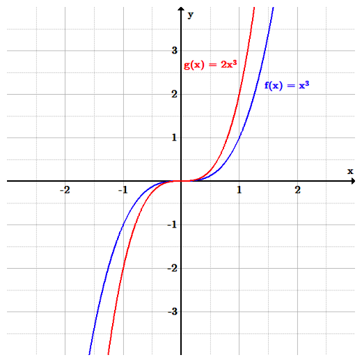{kind=link}
The function $f(x)=x^3$ is scaled by a factor of two.
4.4.2. Translations
A translation of a function is a shift in one or more directions. It is represented by adding or subtracting from either y or x.
Learning Objective
Manipulate functions so that they are translated vertically and horizontally
Key Points
- A translation is a function that moves every point a constant distance in a specified direction.
- A vertical translation is generally given by the equation $y=f(x)+b$ . These translations shift the whole function up or down the y-axis.
- A horizontal translation is generally given by the equation $y=f(x-a)$ . These translations shift the whole function side to side on the x-axis.
Key Terms
- vertical translation
- A shift of the function along the
$y$ -axis. - translation
- A shift of the whole function by a specified amount.
- horizontal translation
- A shift of the function along the
$x$ -axis.
A translation moves every point in a function a constant distance in a specified direction. In algebra, this essentially manifests as a vertical or horizontal shift of a function. A translation can be interpreted as shifting the origin of the coordinate system.
Vertical Translations
To translate a function vertically is to shift the function up or down. If a positive number is added, the function shifts up the $y$ -axis by the amount added. If a positive number is subtracted, the function shifts down the $y$ -axis by the amount subtracted. In general, a vertical translation is given by the equation:
where $f(x)$ is some given function and $b$ is the constant that we are adding to cause a translation.
Let's use a basic quadratic function to explore vertical translations. The original function we will use is:
$\displaystyle y = x^2$ .
Translating the function up the $y$ -axis by two produces the equation:
And translating the function down the $y$ -axis by two produces the equation:
$y=x^2 - 2$ .
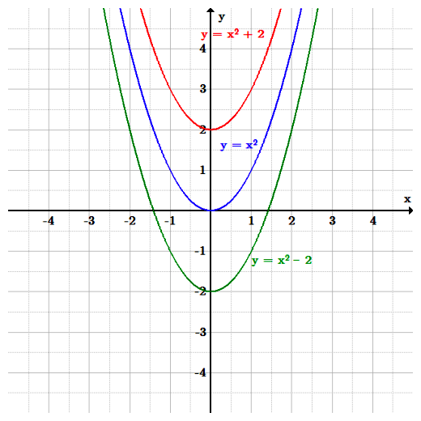{kind=link}
The function $f(x)=x^2$ is translated both up and down by two.
Horizontal Translations
To translate a function horizontally is the shift the function left or right. While vertical shifts are caused by adding or subtracting a value outside of the function parameters, horizontal shifts are caused by adding or subtracting a value inside the function parameters. The general equation for a horizontal shift is given by:
Where $f(x)$ would be the original function, and $a$ is the constant being added or subtracted to cause a horizontal shift. When $a$ is positive, the function is shifted to the right. When $a$ is negative, the function is shifted to the left.
Let's use the same basic quadratic function to look at horizontal translations. Again, the original function is:
$\displaystyle y = x^2$ .
Shifting the function to the left by two produces the equation:
Shifting the function to the right by two produces the equation:
{kind=link}
The function $f(x)=x^2$ is translated both left and right by two.
4.4.3. Reflections
Reflections are a type of transformation that move an entire curve such that its mirror image lies on the other side of the $x$ or $y$ -axis.
Learning Objective
Calculate the reflection of a function over the
Key Points
- A reflection swaps all of the $x$ or $y$ values across the $x$ or $y$ -axis, respectively. It can be visualized by imagining that a mirror lies across that axis.
- A vertical reflection is given by the equation $y = -f(x)$ and results in the curve being "reflected" across the x-axis.
- A horizontal reflection is given by the equation $y = f(-x)$ and results in the curve being "reflected" across the y-axis.
Key Term
- Reflection
- A mirror image of a function across a given line.
Reflections produce a mirror image of a function. The reflection of a function can be performed along the $x$ -axis, the $y$ -axis, or any line. For this section we will focus on the two axes and the line $y=x$ .
Vertical Reflections
A vertical reflection is a reflection across the $x$ -axis, given by the equation:
In this general equation, all $y$ values are switched to their negative counterparts while the $x$ values remain the same. The result is that the curve becomes flipped over the $x$ -axis. As an example, let the original function be:
$\displaystyle y = x^2$
The vertical reflection would then produce the equation:
{kind=link}
The function $y=x^2$ is reflected over the $x$ -axis.
Horizontal Reflections
A horizontal reflection is a reflection across the $y$ -axis, given by the equation:
In this general equation, all $x$ values are switched to their negative counterparts while the y values remain the same. The result is that the curve becomes flipped over the $y$ -axis. Consider an example where the original function is:
Therefore the horizontal reflection produces the equation:
{kind=link}
The function $y=(x-2)^2$ is reflected over the $y$ -axis.
Reflections Across a Line
The third type of reflection is a reflection across a line. Let's look at the case involving the line $y=x$ . This reflection has the effect of swapping the variables $x$ and $y$ , which is exactly like the case of an inverse function. As an example, let the original function be:
The reflected equation, as reflected across the line $y=x$ , would then be:
{kind=link}
The function $y=x^2$ is reflected over the line $y=x$ .
4.4.4. Stretching and Shrinking
Stretching and shrinking refer to transformations that alter how compact a function looks in the $x$ or $y$ direction.
Learning Objective
Manipulate functions so that they stretch or shrink
Key Points
- When by either $f(x)$ or $x$ is multiplied by a number, functions can "stretch" or "shrink" vertically or horizontally, respectively, when graphed.
- In general, a vertical stretch is given by the equation $y=bf(x)$ . If $b>1$ , the graph stretches with respect to the $y$ -axis, or vertically. If $b<1$ , the graph shrinks with respect to the $y$ -axis.
- In general, a horizontal stretch is given by the equation $y = f(cx)$ . If $c>1$ , the graph shrinks with respect to the $x$ -axis, or horizontally. If $c<1$ , the graph stretches with respect to the $x$ -axis.
Key Term
- scaling
- A transformation that changes the size and/or shape of the graph of the function.
In algebra, equations can undergo scaling, meaning they can be stretched horizontally or vertically along an axis. This is accomplished by multiplying either $x$ or $y$ by a constant, respectively.
Vertical Scaling
First, let's talk about vertical scaling. Multiplying the entire function $f(x)$ by a constant greater than one causes all the $y$ values of an equation to increase. This leads to a "stretched" appearance in the vertical direction. If the function $f(x)$ is multiplied by a value less than one, all the $y$ values of the equation will decrease, leading to a "shrunken" appearance in the vertical direction. In general, the equation for vertical scaling is:
where $f(x)$ is some function and $b$ is an arbitrary constant. If $b$ is greater than one the function will undergo vertical stretching, and if $b$ is less than one the function will undergo vertical shrinking.
As an example, consider the initial sinusoidal function presented below:
$\displaystyle y = \sin(x)$
If we want to vertically stretch the function by a factor of three, then the new function becomes:
{kind=link}
The function $y=\sin(x)$ is stretched by a factor of three in the $y$ direction.
Horizontal Scaling
Now lets analyze horizontal scaling. Multiplying the independent variable $x$ by a constant greater than one causes all the $x$ values of an equation to increase. This leads to a "shrunken" appearance in the horizontal direction. If the independent variable $x$ is multiplied by a value less than one, all the x values of the equation will decrease, leading to a "stretched" appearance in the horizontal direction. In general, the equation for horizontal scaling is:
where $f(x)$ is some function and $c$ is an arbitrary constant. If $c$ is greater than one the function will undergo horizontal shrinking, and if $c$ is less than one the function will undergo horizontal stretching.
As an example, consider again the initial sinusoidal function:
If we want to induce horizontal shrinking, the new function becomes:
{kind=link}
The function $y=\sin(x)$ is shrunk by a factor of three in the $x$ direction.